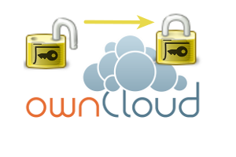
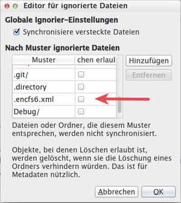

EncFS in der Cloud
Achtung!
Die Verwendung dieses Howto geschieht auf eigene Gefahr. Bei Problemen mit der Anleitung melde dies bitte in der dazugehörigen Diskussion und wende dich zusätzlich an den Verfasser des Howtos.
Hinweis:
Zum Verständnis dieses Artikels sind folgende Seiten hilfreich:
 Das Thema, seine Daten in der Cloud aufzubewahren und zu verschlüsseln, betrifft immer mehr Nutzer. Die Tendenz steigt, weil bei der heutigen Vernetzung und Vielzahl an Endgeräten (PC, Notebook, Tablet, Handy) eine generelle Verfügbarkeit der Daten erwünscht ist. Selbst unerfahrene Nutzer können heutzutage problemlos Cloudienste nutzen. Die Einfachheit der Installation und Verwendung laden dazu ein, Verschlüsselungssysteme wie EncFs einzusetzen. EncFs ist auf Grund seiner "Datei-weisen" Verschlüsselung für diesen Einsatz prädestiniert, da dadurch nur jeweils geänderte Dateien synchronisiert werden und sich so der Datenstrom in Grenzen hält.
EncFs ist einfach zu verwenden. Insbesondere wenn man grafische Werkzeuge wie z.B. den Gnome-EncFS Manager verwendet. Dies klappt sogar auf dem Android-Handy mit Anwendungen wie z.B. Crpytonite (hierauf wird in diesem Artikel nicht eingegangen).
Die Annehmlichkeiten der Verwendung von EncFs durch solche Tools verleiten dazu technische Hintergründe zu übersehen und damit Sicherheitsaspekte außer Acht zu lassen. Besonders kritisch kann dies werden, wenn sensible Daten in die Cloud gestellt werden.
Der Grund, warum es diesen Artikel gibt:
Hinweis:
Der (einzige) private Schlüssel von EncFs wird standardmäßig zusammen mit allen Konfigurationsoptionen in einer XML-Textdatei mit Namen encfs6.xml gespeichert (Volume Key genannt) . Diese befindet sich zusammen mit den verschlüsselten Daten im selben Verzeichnis wie die verschlüsselten Daten.
Einziger Schutz: ein Passwort.
Vorbemerkungen¶
Standardkonfiguration von EncFs und Volume-Key¶
Quelle: Wikipedia: EncFS
"[...] Verschlüsselt werden die Daten dabei mit einem großen, in einer Datei vorliegenden Schlüssel, dem sogenannten Volume-Key. Dieser ist nochmals mit einem Passwort geschützt, um Entschlüsselung bei Kenntnis des Volume-Keys zu verhindern. [...]"
1 2 3 4 5 | .Data_EncFS/ <- Basisverzeichnis ├── kadfZkkad8435hölkqehlh,a <- verschlüsselte Dateien und Ordner ├── jfajds4lkfasHmd9asdfsasd ├── [...] └── .encfs6.xml <- volume-key hier |
Hat ein Angreifer Zugriff auf diese Daten, benötigt er zur Entschlüsselung des Verzeichnisses nur das Benutzerpasswort um an die Daten zu gelangen. Software um Passwörter zu entschlüsseln leistet heute enormes. Eine Entzifferung ist für einen Angreifer nur eine Frage der Zeit.
Und genau hier liegt die Chance für den Angreifer. Das Web bietet ihm einen ständigen Zugang, er kann automatisiert und in aller Ruhe den Server angreifen, dann die encfs6.xml auslesen und entschlüsseln.
Das Problem dabei ist: In der Regel bleiben die Daten zur Verschlüsselung der Daten auf dem Server über lange Zeit unverändert bestehen:
Den Schlüssel (Volume-Key) bleibt für die gesamte Laufzeit des Verzeichnisses erhalten und kann nicht geändert werden
 !
! Wer verwendet wirklich ein starkes, zufallsgeneriertes Passwort und verwendet ausschließlich (Passwortgenerator- und -manager wie KeePassX oder pwgen)?
Wer ändert die Passwörter regelmäßig?
Kryptographische Aspekte des Volume-Key¶
Die zentrale und einzige Konfigurationsdatei für ein EncFs-Dateisystem ist eine XML-Datei. Sie enthält alle wichtigen Konfigurationsdaten, darunter zwei kryptografisch wichtige Sequenzen, die zur Entschlüsselung benötigt werden:
1. Der Volume-Key - ein privater Schlüssel, welcher durch ein Kennwort verschleiert ist.
1 2 3 | <encodedKeyData> fd7as87dffaldfkahdflkahfdsölkfadsfad8fßa09d8f0WFlSd2m6gfk43682435j432hhsjwfbK9INfz27adf== </encodedKeyData> |
2. Der Salt - ein zusätzlicher Schlüssel, um die allgemeine Sicherheit gegenüber Entschlüsselungsalgorithmen zu erhöhen.
1 2 3 | <saltData> LwYW6nBVtDj/wv+2jlmyS3TZ5LA= </saltData> |
Warum ist dies kritisch?:
Die Konfigurationsdaten zur Verschlüsselung sowie der private Schlüssel sollten normalerweise getrennt aufbewahrt werden. In der Regel ist sogar eine physikalische Trennung und Speicherung auf einem externen Datenträger oder zumindest an einem besonders geschützten Ort sinnvoll - z. B. ein separates, verschlüsseltes Verzeichnis.
Ein einfaches Beispiel um den Sachverhalt zu verstehen: Die Karte enthält den elektronischen Schlüssel, dieser ist nur durch ein Passwort geschützt (die PIN in diesem Fall). Kein Mensch würde seine EC-Karte offen irgendwo hinlegen.
Die Standardkonfiguration von EncFs sieht folgendes vor: Der Schlüssel und die verschlüsselten Daten werden zusammen in ein Verzeichnis gelegt. Ein potentieller Angreifer kann nach erfolgreichem Knacken des Passwortes die privaten Daten des Nutzers in aller Ruhe auslesen, ohne dass dieser etwas davon mitbekommt. Da die meisten Anwender weder ihr Owncloud-Zuganspasswort noch das Passwort des EncFs-Verzeichnisses regelmäßig ändern, stehen die Benutzerdaten in der Owncloud für einen Angreifer wahrscheinlich für sehr lange Zeit wie ein Scheunentor offen.
Bei derzeit rasant steigender Nutzung von Cloud-Systemen ist die Wahrscheinlichkeit hoch, dass Angreifer potentielle Sicherheitslücken in Systemen angreifen, um an Nutzerdaten zu gelangen. Dies trifft insbesondere auf einfach zu verwendende Systeme wie Dropbox oder im privaten Serverumfeld leicht aufzusetzende wie Owncloud zu. Die Hürde in Sachen Sicherheit kann man also nicht hoch genug legen.
Voraussetzungen für Schutzmassnahmen¶
Um die minimalen Sicherheitsaspekte umzusetzen, wird die Kenntnis der Installation von EncFs und optional dem Gnome-Encfs-Manager voraus gesetzt. Die Konfiguration wird für den ownCloud-Client und den Dropbox-Client erläutert.
Um alle Sicherheitsaspekte umzusetzen, sollte man mit einem Passwortgenerator- und -manager wie KeePassX umgehen können. Automatisieren lässt sich vieles, wenn man grafische Tools wie den Gnome-Encfs-Manager einsetzt.
Beispiel¶
Folgendes Szenario wollen wir hier realisieren:
Die Owncloud ist eingerichtet, und der Owncloud Ordner befindet sich im Verzeichnis ~/OwnCloud.
Die verschlüsselten Daten liegen im versteckten Verzeichnis ~/OwnCloud/.Mein_EncFs_01_Crypt. Die entschlüsselten Daten sollen im Mountpunkt ~/Mein_EncFs_01 zum Liegen kommen, und die Schlüssel werden im versteckten Verzeichnis ~/.Meine_EncFs_Schluessel aufbewahrt.
Den Schlüssel für das Datenverzeichnis ~/OwnCloud/.Mein_EncFs_01_Crypt/.encfs6.xml haben wir aus dem Datenverzeichnis heraus verschoben in ~/.Meine_EncFs_Schluessel
und inMein_EncFs_01_Volume-Key.xml umbenannt.Im EncFS-Wurzelverzeichnis ~/OwnCloud/.Mein_EncFs_01_Crypt liegt ein symbolischer Link, der auf den Volume-Key in ~/.Meine_EncFs_Schluessel mit dem Namen .encfs6.xml zeigt.
Der Volume-Key ist also lokal auf dem Rechner gespeichert. In der OwnCloud befinden sich lediglich die verschlüsselten Daten.
Hier der Aufbau in der Übersicht:
1 2 3 4 5 6 7 8 9 10 11 | HOMEVERZEICHNIS
├── OwnCloud
│ └── .Mein_EncFs_01_Crypt
│ ├── ad356kfjaoldkfjadskfj9a8d724
│ └── .encfs6.xml -> ../../.Meine_EncFs_Schluessel/Mein_EncFs_01_Volume-Key.xml
│
├── Mein_EncFs_01
│ └── Entschluesselter_Ordner
│
└── .Meine_EncFs_Schluessel
└── Mein_EncFs_01_Volume-Key.xml
|
Das eigentliche Einhängen des Verzeichnisses wird in diesem Artikel nicht behandelt. Hierzu lese man den Artikel EncFS.
Sicherstellen, dass der Volume-Key nicht in der Cloud landet¶
Da in der Regel beim Anlegen eines EncFs-Verzeichnisses im Cloud-Ordner der Volume-Key standardmäßig gleich mit erstellt und im Datenverzeichnis abgelegt wird, würde dieser sofort in die Cloud synchronisiert (und versioniert!).
Daher sollte man das EncFS-Verzeichnis erst einmal lokal anlegen und dann den Volume-Key an einen anderen Ort verschieben. Danach kann man das EncFs-Datenverzeichnis - ohne Volume-Key - in die Cloud verschieben.
1 2 3 4 5 6 7 8 9 10 11 12 | mkdir -p ~/Mein_EncFs_01 # Mountpunkt für EncFs mkdir -p ~/.Mein_EncFs_01_Crypt # Wurzelverzeichnis für EncFs mkdir -p ~/.Meine_EncFs_Schluessel # Hier kommt der Volume-Key hinein encfs ~/.Mein_EncFs_01_Crypt ${HOME}/Mein_EncFs_01 # Erstellen des Volume-Key # Verschieben des Volume-Key in ein lokales Verzeichnis ... mv ~/.Mein_EncFs_01_Crypt/.encfs6.xml \ ~/.Meine_EncFs_Schluessel/Mein_EncFs_01_Volume-Key.xml # ... und des Wurzelverzeichnisses in die Cloud mv ~/.Mein_EncFs_01_Crypt ~/OwnCloud |

Einstellungen im Client der Cloudsoftware¶
Man sollte sicherheitshalber den Dateinamen .encfs6.xml von der Synchronisation ausschließen.
Das geht so:
Owncloud: In den Owncloud Einstellungen kann eine Ignorierliste bearbeitet werden (siehe Abbildung rechts).
Dropbox: Hier lässt sich dies meiner Kenntnis derzeit noch nicht realisieren (das könnte aber noch kommen). Abhilfe schafft die unten beschriebene Methode unter Verwendung eines symbolischen Links.
Symbolische Links werden weder in der OwnCloud noch in der Dropbox synchronisiert. Daher ist dies auch auch die empfohlene Methode um EncFs "mitzuteilen", wo sich der VolumeKey befindet.
Sicheres Zufallspasswort und hohe Verschlüsselungsstufe verwenden¶
Da bei Zugriff auf das verschlüsselte Verzeichnis ein starkes Passwort wichtig ist, sollte man zur Erstellung einen Passwortgenerator- und -manager wie KeePassX verwenden.
Das Passwort kann mit dem Werkzeug encfsctl geändert werden.
1 | encfsctl passwd Wurzelverzeichnis |
Die Daten sollten mit der Option paranoia verschlüsselt werden (256 bit AES).
Externen Volume-Key einbinden¶
EncFS muss beim Aktivieren ("mount") wissen, wo sich das Wurzelverzeichnis und das Zugriffsverzeichnis (Mountpunkt) befinden (Quelle: Manpage von encfs):
1 | encfs WURZELVERZEICHNIS MOUNTPUNKT |
Der Volume-Key wird von EncFs standardmäßig als .encfx6.xml bezeichnet und im Datenverzeichnis gespeichert.
Es gibt zwei Möglichkeiten, um einen externen Volume-Key beim Aktivieren ("mount") einzubinden:
im Datenverzeichnis wird ein symbolischer Link zum Volume-Key erstellt (empfohlene Methode)
beim Mounten gibt man den Ort des Volume-Key über eine Umgebungsvariable mit an
1.: Um einen symbolischen Link zu erstellen, geht man folgendermaßen vor:
cd ~/OwnCloud/.Mein_EncFs_01_Crypt
ln -s ~/Meine_Schluessel/Mein_EncFs_01_Volume-Key.xml ~/OwnCloud/.Mein_EncFs_01_Crypt/.encfs6.xml
# Jetzt kann ganz normal gemounted werden:
encfs ~/OwnCloud/.Mein_EncFs_01_Crypt ${HOME}/Mein_EncFs_012.: Um den Ort für den Volume-Key direkt beim Aktivieren an EncFS zu übergeben, kann die Umgebungsvariable ENCFS6_CONFIG gesetzt werden. Der Pfad zur Datei muss relativ (!) zum Datenverzeichnis angegeben werden. Der Volume-Key wird in unserem Beispiel folgendermaßen referenziert:
ENCFS6_CONFIG=../Meine_Schluessel/Mein_EncFs_01_Volume-Key.xml; encfs ~/.Mein_EncFs_01_Crypt ~/Mein_EncFs_01
Zusätzliche Sicherheitsmaßnahmen¶
Volume-Key in verschlüsseltem Verzeichnis speichern¶
Wer seinen Rechner oder sein Home-Verzeichnis nicht verschlüsselt hat, dem ist in jedem Fall zu empfehlen, die Volume-Keys in einem verschlüsselten Verzeichnis aufzubewahren. Damit kann ein Kopieren des Volume-Keys verhindert werden, wenn der PC z.B. unbeaufsichtigt im Büro oder in Öffentliche Räumen steht oder aber das Datenverzeichnis im Netzwerk freigegeben ist.
Die erreicht man durch
ein zusätzliches, lokales EncFs-Verzeichnis, in dem die Schlüssel gespeichert werden.
Man kann zusätzlich den Gnome-EncFs-Manager einsetzen für ein vereinfachtes Mount-Management.
Volume-Key auf externem Datenträger speichern¶
Unter Umständen kann es auch notwendig sein, die Volume-Keys auf einem verschlüsselten externen Datenträger (USB-Stick) abzulegen, um sie physikalisch von den verschlüsselten Daten zu trennen, z.B. wenn der Rechner unbeaufsichtigt ist und ein Zugriff nicht auszuschließen ist (MultiUser-System). Dieser Datenträger sollte natürlich verschlüsselt werden.
EncFs Link für andere Systeme verbergen¶
EncFs bietet die Funktion, das aktivierte ("mounted") Verzeichnis im Netzwerk sichtbar zu machen. Dies ist ein großes Sicherheitsleck (Samba, SSHfs).
EncFs bietet die Option --allow-other beim Mounten.
Im Gnome-EncFs-Manager gibt es die Option "Erlaube anderen Benutzern den Zugriff auf dieses Verzeichnis".
Diese Funktionen sollte man nicht verwenden.
Umbenennen des Volume-Key und Abspeichern an einem unauffälligen Ort¶
Dies bringt zwar praktisch keinen Sicherheitsgewinn, da die Datei jederzeit als XML-Konfigurationsdatei zu erkennen ist, kann aber unter Umständen verhindern, dass der Volume-Key als solcher erkannt wird.
Verschlüsselungs-App in der Owncloud aktivieren¶
Optional kann man die Verschlüsselung der OwnCloud anschalten, damit ein Angreifer die gespeicherten Dateien nicht im Klartext sehen kann. Dies erfordert jedoch einen administrativen Zugang zum OwnCloud-Server.
Verschlüsselung auf dem Wirtssytem des Servers verwenden¶
Dies verhindert Angriffe auf einem abgeschalteten System oder einem KVM Image auf dem Wirtssystem.
Problembehebung¶
Volume-Key wurde versehentlich in die Cloud synchronisiert¶
Hier gibt es leider nur die Möglichkeit, auf dem Server im Verzeichnis /owncloud/data/USERNAME/files_versions nach der Datei zu suchen und diese zu löschen.
Ab Owncloud Version 8.2 wird das Löschen von Versionen mit dem Dienstprogramm occ unterstützt:
Unter Dropbox ist mir keine Möglichkeit bekannt.
Mein Volume-Key wurde kompromittiert¶
Der erstellte Volume-Key kann für die gesamte Laufzeit des EncFs-Verzeichnisses nicht mehr geändert werden! Es muss ein neues EncFs-Verzeichnis erstellt, und die Daten mpüssen dort hineinkopiert werden.
- Erstellt mit Inyoka
-
 2004 – 2017 ubuntuusers.de • Einige Rechte vorbehalten
2004 – 2017 ubuntuusers.de • Einige Rechte vorbehalten
Lizenz • Kontakt • Datenschutz • Impressum • Serverstatus -
Serverhousing gespendet von